図解：新印象主義
新印象主義の誕生と展開
- 1870年代
 印象派の筆触分割感覚で色を並べる
印象派の筆触分割感覚で色を並べる - 1884
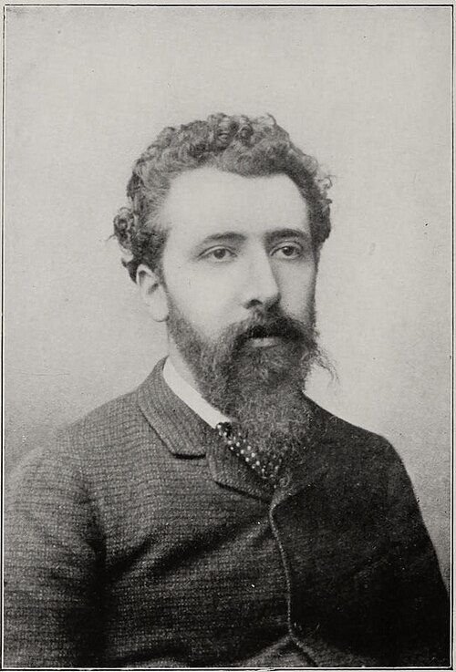
スーラが登場サロンで落選し
無審査の独立展へ - 1886
 点描の大作を発表最後の印象派展へ
点描の大作を発表最後の印象派展へ
フェネオンが命名 - 1891〜
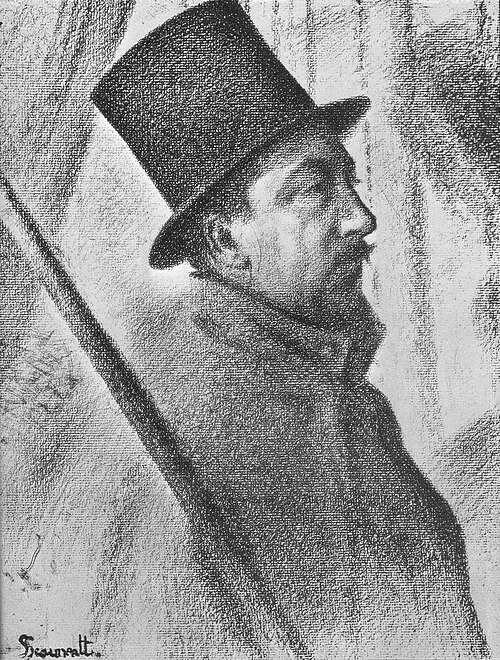
シニャックが継ぐスーラ31歳で死去
理論を広める - 1905
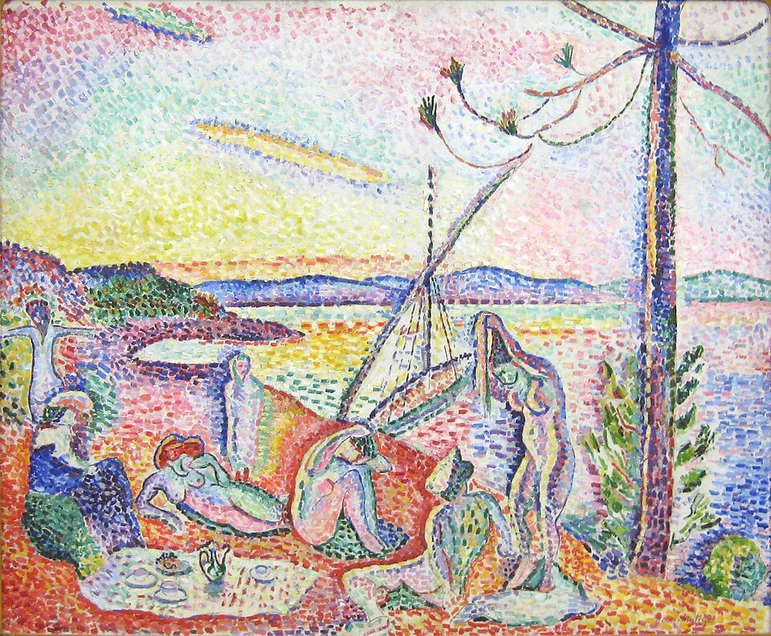
フォーヴィスムへマティスが点描で出品
印象派と何が違うか
シュヴルールらの色彩理論制作戸外で一気にアトリエで時間をかける画面ぼやけた一瞬時が止まった永遠性批判筆跡が荒い筆跡がなく現実味がない
重要人物
新印象主義の画家
- ジョルジュ・スーラ画家点描を確立。《アニエールの水浴》は落選
- ポール・シニャック画家スーラを継ぎ理論を広める。独立展の会長に
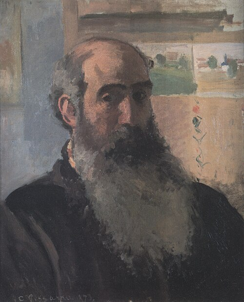
カミーユ・ピサロ画家印象派最年長。一時は点描を用い、スーラを推す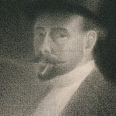
シャルル・アングラン画家アンデパンダン展の創設に関わる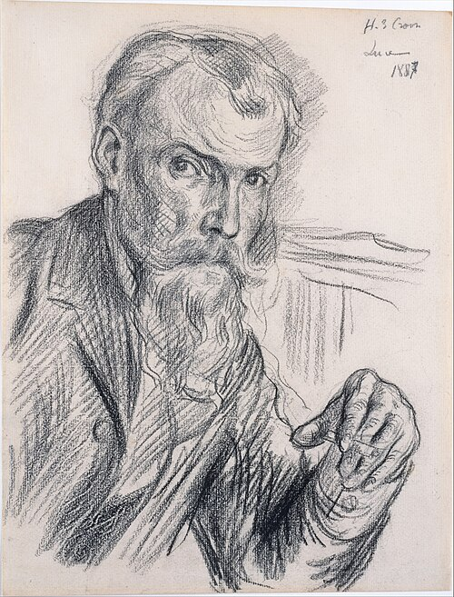
アンリ＝エドモン・クロス画家スーラの理論と技法に影響を受ける- アンリ・ヴァン・デ・ヴェルデ画家・建築家点描の影響を受け、後にモダニズム建築へ
理論と批評
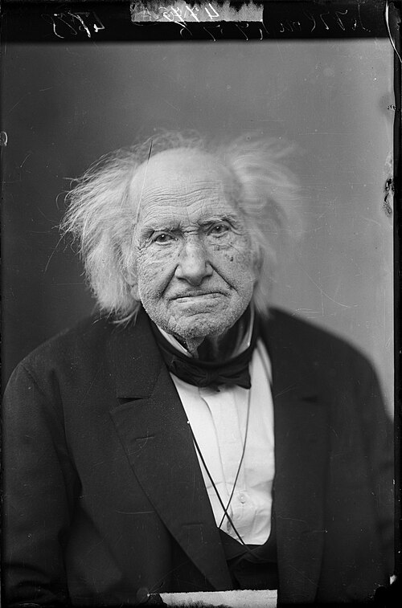
ミシェル＝ウジェーヌ・シュヴルール科学者織物の悩みから色彩調和論を発表- オグデン・ルード色彩論の著者『現代色彩論』をスーラが吸収
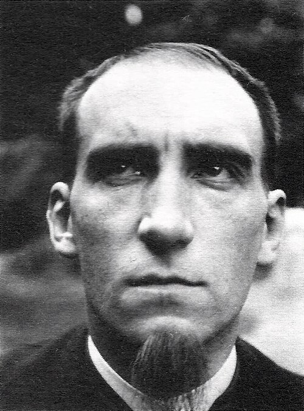
フェリックス・フェネオン批評家「ネオ・アンプレッショニスト」と紹介
同時代と次の世代
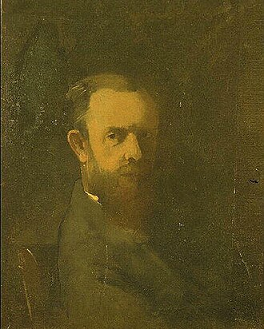
オディロン・ルドン画家象徴主義の代表。第八回展に初出品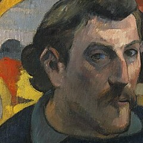
ポール・ゴーギャン画家ポスト印象派。点描的な作品も残す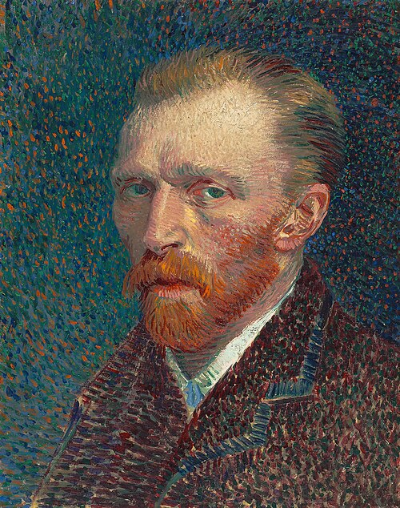
フィンセント・ファン・ゴッホ画家ポスト印象派。《種まく人》など点描的な作品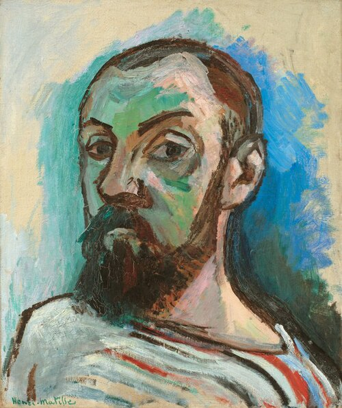
アンリ・マティス画家シニャックに招かれ、点描作品を出品
肖像・図版の出典
- ジョルジュ・スーラの写真、1888年、撮影者不明：出典（Public domain）
- 《ポール・シニャックの肖像》ジョルジュ・スーラ、1890年、コンテ・クレヨン、個人蔵：出典（Public domain）
- 《自画像》カミーユ・ピサロ、1873年、オルセー美術館：出典（Public domain）
- 《自画像》シャルル・アングラン、1892年：出典（Public domain）
- 《アンリ＝エドモン・クロスの肖像》マクシミリアン・リュス、1897～1898年頃、メトロポリタン美術館：出典（CC0）
- 書斎のアンリ・ヴァン・デ・ヴェルデの写真、1908年、撮影者不明：出典（Public domain）
- ミシェル＝ウジェーヌ・シュヴルールの写真、ナダール撮影、1886年：出典（Public domain）
- フェリックス・フェネオンの写真、1900年頃、撮影者不明：出典（Public domain）
- 《自画像》オディロン・ルドン、1877年頃：出典（Public domain）
- 《黄色いキリストのある自画像》ポール・ゴーギャン、1890～1891年、オルセー美術館：出典（Public domain）
- 《自画像》フィンセント・ファン・ゴッホ、1887年、シカゴ美術館：出典（Public domain）
- 《縞のTシャツの自画像》アンリ・マティス、1906年、デンマーク国立美術館：出典（Public domain）
新印象主義と点描
新印象主義と色の分割
動画 1:49～1880年代に現れた新印象主義は、感覚的に筆を操る印象派に対し、色と光を科学的に追究しました。印象派は戸外制作で一瞬の空気を捉え、即興的な筆跡を残しました。絵の具を混ぜず、原色を隣り合わせる筆触分割によって、従来より明るく、光を意識した画面を生み出していました。新印象主義はその感覚的な部分を否定し、計算に基づいて絵画を作ることを目指します。その中心となったのが、色の分割でした。
筆触分割では、二色を細かく並べると、目には区別がつかなくなり、中間の一色として認識されます。並置加法混色、あるいは視覚混合と呼ぶ効果です。近くで荒く見える筆触も、遠くから見ると調和した色へ融合し、具体的な姿を帯びます。そのため、絵との距離によって見え方が大きく変わります。
画像を拡大 ＋
《ラ・グルヌイエール》
- 作者
- クロード・モネ
- 制作時期
- 1869年
- 所在地・所蔵
- メトロポリタン美術館（29.100.112）
- 素材・形式
- 油彩画
出典・画像について
意図的な色の効果と点描
動画 2:56～印象派が色の分割の効果を生んだのは、必ずしも初めから狙った結果ではありませんでした。絵の具は混ぜるほど暗くなるため、混色を避けて感覚的に配置し、戸外で一瞬を切り取るタッチが加わった結果でもあったのです。新印象主義は、その感覚や偶然性に頼らず、意図的に色の効果を起こそうとしました。
そのために用いたのが点描です。線のタッチを点へ変えて並べ、並置加法混色を起こしやすくし、印象派以上に明るい画面を生み出そうとしました。分割主義、点描主義とも呼ばれます。現代のテレビやモニターのように、細かな色の要素から画面を作ることを絵画で試みた、と考えることもできます。

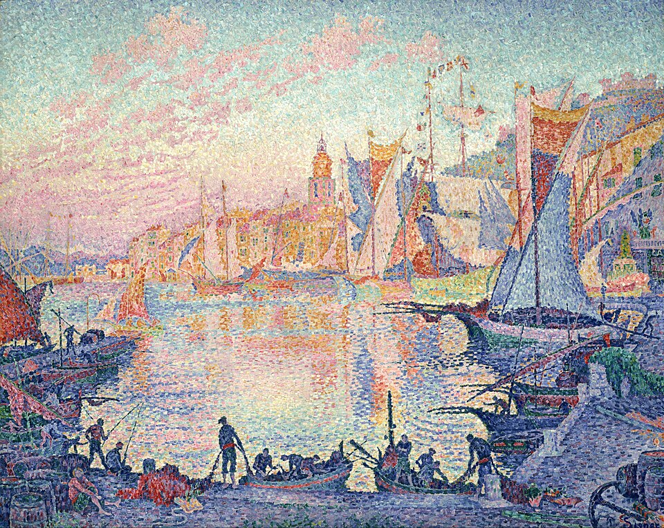
画像を拡大 ＋《サン＝トロペの港》
- 作者
- ポール・シニャック
- 制作時期
- 1901～1902年
- 所在地・所蔵
- 国立西洋美術館（P.1987-0003）
- 素材・形式
- 油彩画
出典・画像について
ただし技法を確立するため、印象主義が重んじた戸外制作から、アトリエでの制作へ戻りました。現場で習作を描いた後、構成と色彩を時間をかけて考え、完成作を仕上げます。戸外制作の副産物ともいえる筆触分割を発展させようとした結果、もとの制作姿勢を離れたのでした。ぼやけていたモチーフは明確になり、時が止まったような永遠性を感じさせます。背景には色彩学の発展と、印象派が認められ始めた時代に新たな前衛を求める動きがありました。その中心がジョルジュ・スーラと、彼の信奉者ポール・シニャックです。
最後の印象派展での登場
最後の印象派展と新しい画家
動画 4:57～1886年、1874年から続いた印象派展の最後となる第八回展が開かれました。これまでの印象派展にはルノワールやドガらが出品し、当初の批判を越えて1880年代には評価が高まりました。一方で、画家同士の結び付きは弱くなっていました。反サロンの立場を取りながらサロンへ出品することの是非や、芸術上の志向の変化が対立を生んだのです。第八回にはモネ、ルノワール、シスレーらも参加せず、初期の仲間の多くが離れていました。
最後の展覧会に初めて出したのが、スーラ、シニャック、オディロン・ルドンらです。ルドンは、印象主義と並行して起こった象徴主義の代表で、新印象主義とは異なる傾向でした。従来の印象派らしくない、次の時代を予感させる画家たちが登場した点も、この展覧会の特徴です。
《グランド・ジャット島》とフェネオン
動画 6:24～スーラが出品した大作《グランド・ジャット島の日曜日の午後》は、習作を重ね、約二年かけて制作されました。しかし細かな点描で筆跡が失われ、現実味がないとして、多くの批評家を困惑させ、非難を浴びます。印象派が荒い筆跡を残して批判されたのとは、逆の理由でした。
画像を拡大 ＋
《グランド・ジャット島の日曜日の午後》
- 作者
- ジョルジュ・スーラ
- 制作時期
- 1884～1886年
- 所在地・所蔵
- シカゴ美術館（1926.224）
- 素材・形式
- 油彩画
出典・画像について
新しい技法に革新性を認めた、ほぼ唯一の批評家がフェリックス・フェネオンでした。彼がスーラやシニャックを「ネオ・アンプレッショニスト」と紹介したことで、新しい芸術として認識され始めます。新印象主義を推し進めた批評家でした。
スーラ
スーラの出発と独立展
動画 7:21～スーラはモネやルノワールより一回り若く、印象派の技法に興味を持ちました。古い技法しか教えない美術学校を辞め、一人で描き始めます。内向的な性格も、アトリエで一人研究する方法に合っていたのでしょう。初期の大作《アニエールの水浴》にはまだ線のようなタッチや素描の輪郭が残り、点描としては過渡的な段階でした。

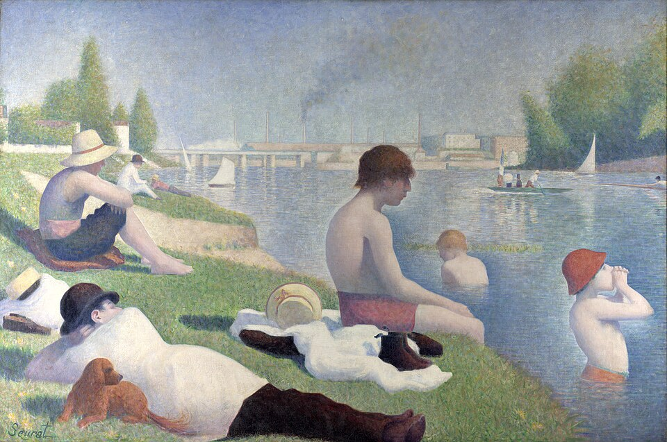
画像を拡大 ＋《アニエールの水浴》
- 作者
- ジョルジュ・スーラ
- 制作時期
- 1884年
- 所在地・所蔵
- ナショナル・ギャラリー、ロンドン（NG3908）
- 素材・形式
- 油彩画
出典・画像について
この作品をサロンへ出したものの、新しい技法は認められず落選します。そこで1884年から始まったアンデパンダン展へ出品しました。アンデパンダンは英語のインディペンデントに当たり、独立展という意味です。サロンの保守性や審査に嫌気が差した画家が、無審査で展示する場を設けました。この頃にはサロンは絶対的な存在ではなくなり、印象派以外にも自主的に展覧会を開く動きが強まっていました。無審査という性格から、アンデパンダン展は多くの前衛的な作品が生まれる場となり、スーラの新しい技法を用いた作品も受け入れられたのです。
その絵に衝撃を受けたのが、カミーユ・ピサロとシニャックでした。印象派最年長のピサロは、若い画家の技法を柔軟に取り入れ、一時は点描も用いて二人と色彩実験を行いました。スーラへ第八回印象派展への出品を勧めたのもピサロです。そこで披露された大作は批判とともに、多くの画家への影響を生みました。
色彩理論と《サーカス》
動画 9:20～スーラは色彩理論や光学を徹底的に学びました。科学者で織物工場の名誉工場長でもあったシュヴルールの色彩調和論は、大きな影響源です。シュヴルールは、織物の発色が悪いという顧客の苦情に悩まされていました。染色自体には問題がないと気づき、色の組合せが原因ではないかと考えます。そして、類似色を合わせる場合と対比色を合わせる場合では、感じる明るさが異なると発表しました。織物から生まれた理論が、絵画へつながったのでした。
19世紀後半には、シャルル・アンリの『科学的美学入門』やオグデン・ルードの『現代色彩論』などが、1870～1880年代に発表されます。スーラは最新の理論も貪欲に吸収しました。《サーカス》では線と色で感情を科学的に表し、動きがないとされた点描へ躍動感を与えようとします。暖色を多く使った、陽気さを感じさせる意欲作でした。

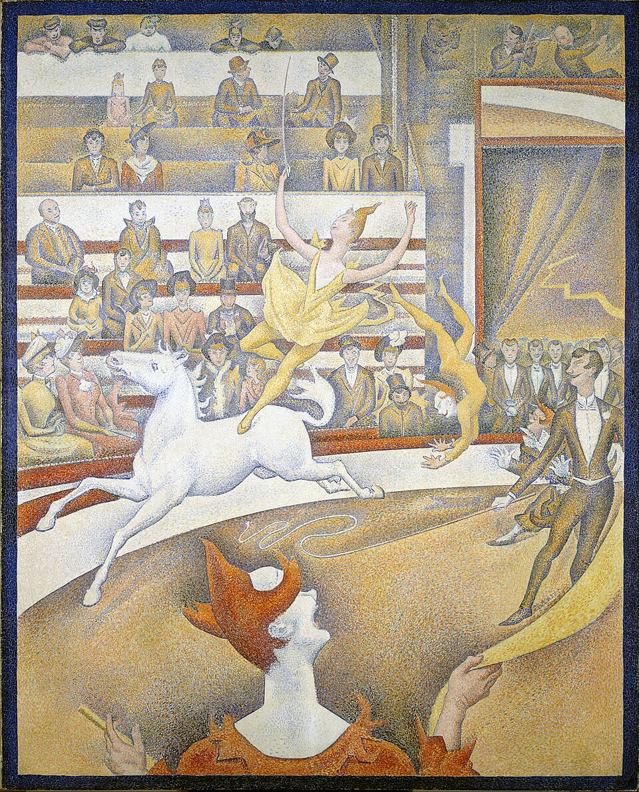
画像を拡大 ＋《サーカス》
- 作者
- ジョルジュ・スーラ
- 制作時期
- 1891年
- 所在地・所蔵
- オルセー美術館（RF2511）
- 素材・形式
- 油彩画
出典・画像について
スーラの短い生涯と広い影響
動画 10:29～スーラは《サーカス》の制作中の1891年、ジフテリアと思われる感染症にかかり、31歳で世を去りました。主な活動は十年にも満たなかったものの、その理論と技法に魅せられた画家は数知れません。ピサロ、シニャックのほか、アンデパンダン展の創設に関わったシャルル・アングラン、アンリ＝エドモン・クロス、後にアール・ヌーヴォーからモダニズム建築を確立するアンリ・ヴァン・デ・ヴェルデも影響を受けました。ポスト印象派のポール・ゴーギャンやフィンセント・ファン・ゴッホも、点描的な作品を残しています。

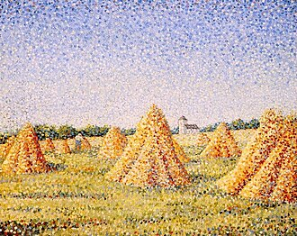
画像を拡大 ＋《収穫（La Moisson）》
- 作者
- シャルル・アングラン
- 制作時期
- 1890年（動画・Commons。年代に資料差あり）
- 所在地・所蔵
- ジュネーヴ、プチ・パレ美術館とされる（所蔵の確定は保留）
- 素材・形式
- 油彩画
出典・画像について
年代は動画・Commonsの1890年を表示するが、公式展覧会目録の同名作品には1887年の記録があり、年代と所蔵の確定は保留。
画像出典：Charles Angrand
Public domain（PD-Art）
作品情報：作品・画像・利用条件
制作メモ
画像は動画と一致。
配信画像は低解像度です。

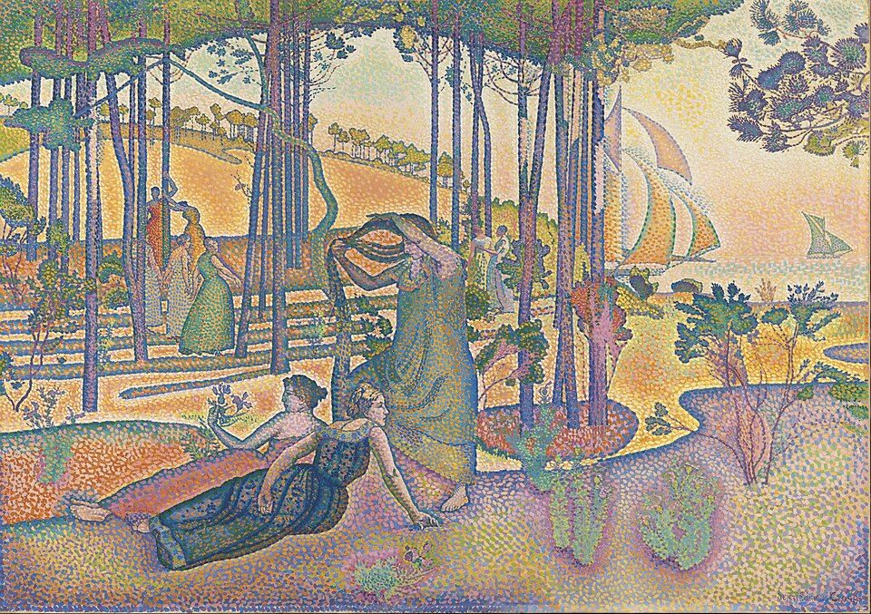
画像を拡大 ＋《夕べの大気（動画名：午後の空気）》
- 作者
- アンリ＝エドモン・クロス
- 制作時期
- 1893年頃
- 所在地・所蔵
- オルセー美術館（RF197681）
- 素材・形式
- 油彩画
出典・画像について
一致画像の所蔵・利用条件を確定できず掲載保留。
《ブランケンベルヘの浜辺と水浴び小屋》
- 作者
- アンリ・ヴァン・デ・ヴェルデ
- 制作時期
- 1888年（動画表示）
- 所在地・所蔵
- 未確定
- 素材・形式
- 油彩画
出典・画像について
作品情報：作品・画像・利用条件

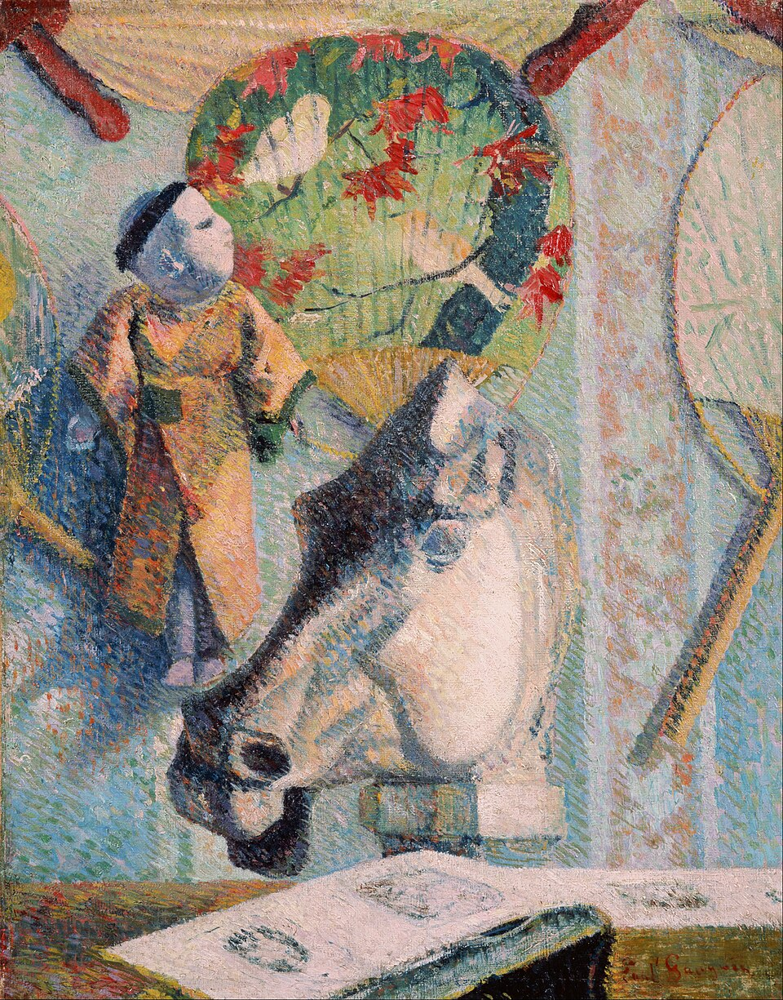
画像を拡大 ＋《馬の頭部のある静物》
- 作者
- ポール・ゴーギャン
- 制作時期
- 1886年
- 所在地・所蔵
- アーティゾン美術館（石橋財団、gy168）
- 素材・形式
- 油彩画
出典・画像について

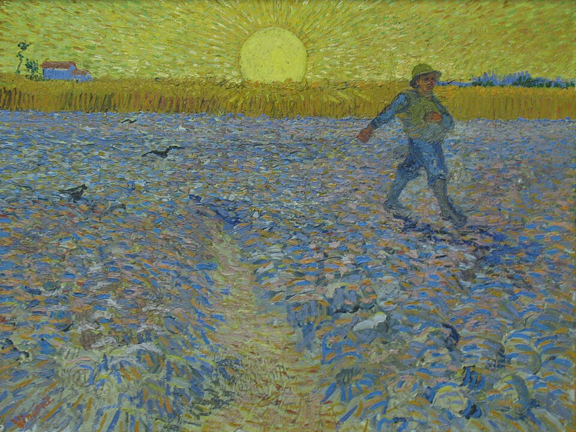
画像を拡大 ＋《種まく人（夕日の種まく人）》
- 作者
- フィンセント・ファン・ゴッホ
- 制作時期
- 1888年6月
- 所在地・所蔵
- クレラー＝ミュラー美術館（KM106.399）
- 素材・形式
- 油彩画
出典・画像について
シニャックとその後
スーラを継いだシニャック
動画 11:05～スーラの意志を継いだのが、親友で信奉者のシニャックです。寡黙で人前に出ないスーラの理論を世へ広めたことも、大きな功績でした。内向的な友と対照的に外向的で陽気なシニャックは、いっそう装飾性を高めました。代表作《フェリックス・フェネオンの肖像》では、従来の肖像では考えにくい、鮮やかで幾何学的な模様が背景を覆っています。描かれたフェネオンは、新印象主義の名付け親でもあります。

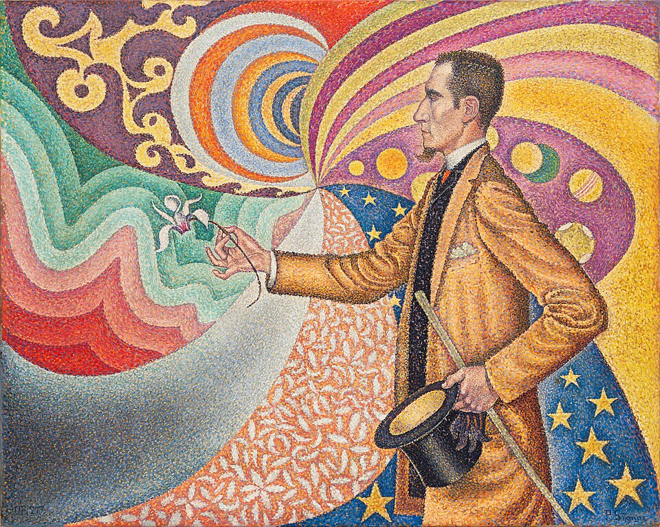
画像を拡大 ＋《フェリックス・フェネオンの肖像》
- 作者
- ポール・シニャック
- 制作時期
- 1890年
- 所在地・所蔵
- ニューヨーク近代美術館（85.1991）
- 素材・形式
- 油彩画
出典・画像について
スーラの死の翌1892年、シニャックはパリを離れ、地中海のサン＝トロペへ移りました。そこから各地のリゾート地を旅し、作品を残します。明るさだけでなく、色に固有の性格や意味、哀愁や感動も意図的に引き出そうとしました。スーラが十分に完成させられなかった方向を受け継いだのです。1899年には『ウジェーヌ・ドラクロワから新印象主義まで』を出版し、点描の理論を文章にもまとめました。

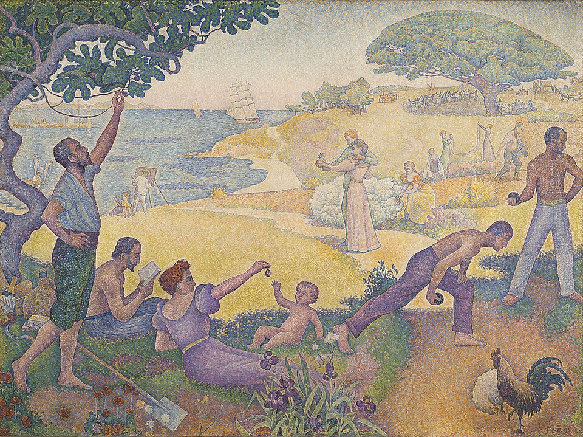
画像を拡大 ＋《調和の時代――黄金時代は過去ではなく未来にある》
- 作者
- ポール・シニャック
- 制作時期
- 1893～1895年
- 所在地・所蔵
- モントルイユ市庁舎（フランス）
- 素材・形式
- 油彩画
出典・画像について
カラー写真とフォーヴィスムへの橋
動画 12:21～1904年、ルミエール兄弟は、初期の実用的なカラー写真技法オートクローム法を発明しました。三原色に着色した澱粉を細かく配置する仕組みで、点描をさらに細かくしたものとも捉えられます。しかし、新印象主義が築いた色彩の理論や幻想性には、写真を越える面もありました。シニャックは晩年まで点描を続け、その方法を貫きました。
松林と赤い髪飾りの少女2人の写真は作者・撮影年・所蔵・利用条件を特定できず掲載保留。
《オートクローム法による少女2人の写真（作品未同定）》
- 作者
- 未確定
- 制作時期
- 未確定
- 所在地・所蔵
- 未確定
- 素材・形式
- オートクローム写真
出典・画像について
作品情報：作品・画像・利用条件
1908年にはアンデパンダン展の会長となり、若い画家の前衛美術を奨励しました。スーラが生み、シニャックが発展させた技法は、別の運動にも影響します。1904年にシニャックのアトリエへ招かれたアンリ・マティスは、翌1905年のアンデパンダン展に《豪奢、静寂、逸楽》を出品しました。スーラやシニャックより強い色の対比を持つ点描作品でした。

《豪奢、静寂、逸楽》
- 作者
- アンリ・マティス
- 制作時期
- 1904年
- 所在地・所蔵
- 国立近代美術館（ポンピドゥー・センター）所蔵／オルセー美術館寄託
- 素材・形式
- 油彩画
出典・画像について
同じ年の秋、ゴッホやゴーギャンの表現も取り入れた異なる絵画が現れ、物議を醸します。色彩を感情表現の手段とするフォーヴィスムの始まりです。その前段階に新印象主義があったことが、重要なつながりとなります。
要点まとめ
- 新印象主義は1880年代に現れ、感覚的に筆を操る印象派に対し、色と光を科学的に追究した。中心はジョルジュ・スーラと、その信奉者ポール・シニャック。
- 印象派の筆触分割による並置加法混色（視覚混合）を、偶然に頼らず意図的に起こすため、線のタッチを点に変えた点描を用いた。分割主義、点描主義とも呼ばれる。技法の確立のため、制作は戸外からアトリエへ戻った。
- 1886年の第八回（最後の）印象派展にスーラ、シニャック、象徴主義のルドンらが初めて出品した。スーラの《グランド・ジャット島の日曜日の午後》は、点描で筆跡が失われ現実味がないと非難された。
- 批評家フェリックス・フェネオンがスーラとシニャックを「ネオ・アンプレッショニスト」と紹介し、新しい芸術として認識され始めた。
- スーラは《アニエールの水浴》がサロンで落選し、1884年に始まった無審査のアンデパンダン展に出品した。ピサロもその技法に衝撃を受け、一時点描を用いた。
- スーラはシュヴルールの色彩調和論やルードの『現代色彩論』などを学び、《サーカス》で点描に躍動感を与えようとした。1891年に31歳で亡くなったが、ゴーギャンやゴッホを含む多くの画家に影響した。
- シニャックはスーラの理論を広め、《フェリックス・フェネオンの肖像》で装飾性を高めた。1892年に地中海のサン＝トロペへ移り、1899年に『ウジェーヌ・ドラクロワから新印象主義まで』を出版した。
- 1904年、ルミエール兄弟が点描に似た仕組みのカラー写真技法オートクローム法を発明した。
- シニャックはアンデパンダン展の会長として前衛を奨励した。アトリエに招かれたマティスは《豪奢、静寂、逸楽》を出品し、1905年秋にはフォーヴィスムが始まった。新印象主義はその前段階となった。
確認問題
答えを考えてから開いてください。選択問題は選ぶとすぐ正誤と解説が出ます（選択肢の順番は開くたびに変わります）。各問題のリンクから該当の章や作品カードへ戻れます。
選択問題：0／5問回答・正解0
A. 一問一答答えを考えてから開く
問1二つの色を細かく並べると、目には区別がつかなくなり中間の一色として認識される効果を何と呼ぶか。
答えを見る
問2スーラやシニャックを「ネオ・アンプレッショニスト」と紹介し、新しい技法に革新性を認めた批評家は誰か。
答えを見る
問3織物の発色についての苦情から、類似色と対比色の組合せで感じる明るさが異なると発表し、スーラに影響を与えた科学者は誰か。
答えを見る
B. 4択選ぶとすぐ正誤と解説
問4スーラの《グランド・ジャット島の日曜日の午後》が、多くの批評家から非難された理由はどれか。
→ 本文で確認（《グランド・ジャット島》とフェネオン）
問5スーラに第八回印象派展への出品を勧めた画家は誰か。
→ 本文で確認（スーラの出発と独立展）
問61904年にシニャックのアトリエへ招かれ、翌年のアンデパンダン展に《豪奢、静寂、逸楽》を出品した画家は誰か。
→ 本文で確認（カラー写真とフォーヴィスムへの橋）
C. 図版問題画像を見て答える
問7この作品の名前と作者を答えよ。
答えを見る
問8この作品の作者は誰か。
→ 作品カードで確認
問9この作品の名前はどれか。
→ 作品カードで確認